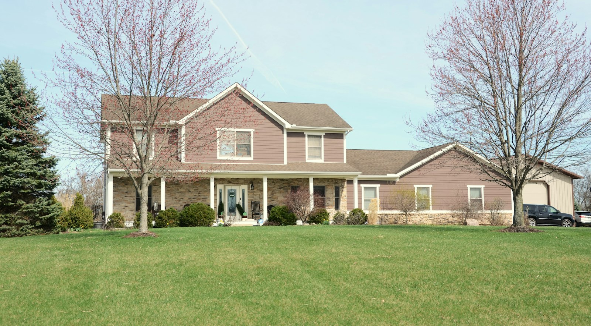

Window cleaning
Let more of the outside in. Ask about cleaning for your home’s windows.
Let’s talk about Window cleaning
Saskatoon, Saskatchewan — A little care. All year.
Clear windows. Tidy lawns. Gutters ready for the rain. Property care that helps you enjoy more of home, through every Saskatoon season.
01 / WHAT WE CAN HELP WITH
Pick a single service or talk about a plan for the year.
Let more of the outside in. Ask about cleaning for your home’s windows.
Let’s talk about Window cleaningGive rain and melting snow a clear path. Discuss your gutters and seasonal cleanup.
Let’s talk about Gutter cleaningKeep your outdoor space ready to enjoy. Ask about one-time and recurring care.
Let’s talk about Lawn careMake a plan before the snow arrives. Enquire about winter service and availability.
Let’s talk about Snow removalRIGHT ON SEASON
Explore a seasonal starting point. Availability and the exact service plan are agreed directly.
Window cleaning, gutter clearing and lawn care to welcome the growing season.
02 / THE POSSIBILITIES
A visual moodboard for your next project.
Licensed stock photography, not the business’s completed work. Select an image for a closer look.
03 / Saskatoon, Saskatchewan
Bridge City Property Pros serves Saskatoon with window cleaning, gutters, lawn care and snow removal. Choose the help your property needs now, or start a conversation about care throughout the year.
Start a conversationShare the idea, location and a few useful details.
Confirm what’s involved, preferences and practical requirements.
Agree on availability and next steps directly with the business.
THE NEXT STEP
Choose a service and tell us about your property. Ask about recurring visits or winter plans; schedules and pricing are confirmed directly.
306-230-0482 Find the business on FacebookThis independent concept does not accept bookings or send enquiries. The phone and Facebook links open the business’s public contact routes.